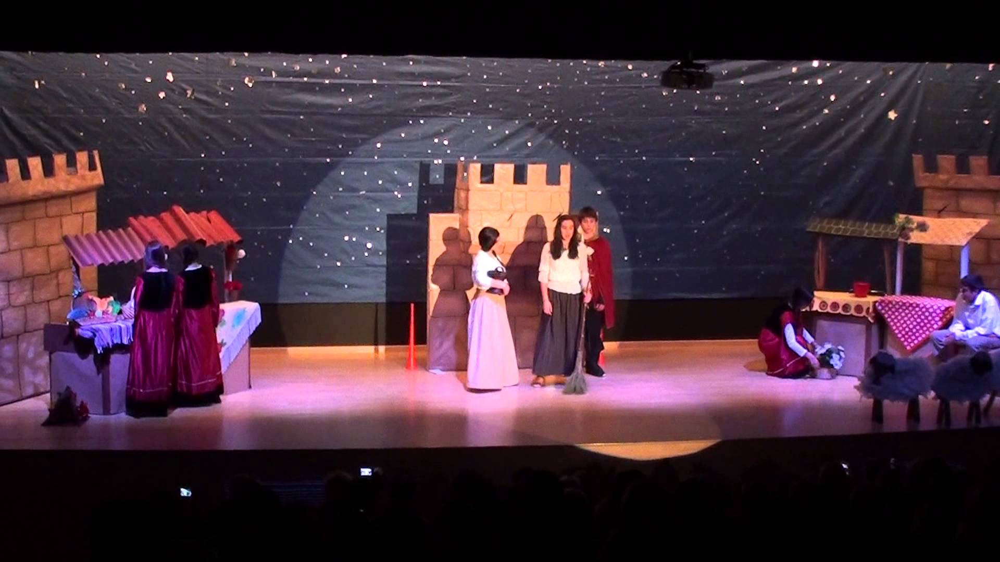

Obra: La doncella sabia
Nuestro curso estara realizando una obra llamada la Doncella sabía como proyecto final de artistíca; Tambien presentaremos manualidades
Nuestro curso estara realizando una obra llamada la Doncella sabía como proyecto final de artistíca; Tambien presentaremos manualidades
En esta area tecnica nosotros debemos realizar un sitio web que podría ser seleccionado para la expotecnología este 6 de junio. Todos daremos nuestro mayor esfuerzo
Algunos estudiantes fueron seleccionados para ir al curso extracurricular de pensamiento computacional, donde se les muestra a los estudiantes a utilizar. scratch
En la materia tecnica de analisis y diseño de sistemas informáticos, Nosotros debemos realizar un sistema de una empresa y exponerlo.
Esta es otro curso extracurricular en el cual solo algunos estudiantes fueron seleccionados, consiste en armar y programar robots para que hagan las funciones que digas. Se presentaran 2 robots con diferentes programas en la Expotecnología.